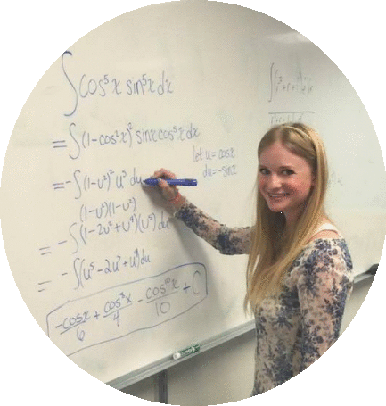

ISABELLA WATSON


About Me

Who I am
Hello! My name is Isabella Watson. I'm a 22 year old student in Chapel Hill, North Carolina.What I'm Up To
I'm currently a junior and student at both UNC Chapel Hill and the College of Engineering at NC State. I transferred to UNC in fall 2016 after earning my Associate in Science degree from Forsyth Technical Community College with highest honors. I'm working toward my Bachelor of Science in Biomedical Engineering through the UNC-NC State joint BME program. I'm also completing a minor in one of my greatest academic passions; mathematics.Expertise
With a predominantly “hands-on” approach to learning, the UNC-NC State joint BME program has provided me with unique opportunities to grow the practical skills necessary for a smooth transition into the workforce.Most of my experience lies in electrical engineering, with a focus on medical application. My courses and personal projects have helped me develop a deep understanding of not only electronic theory, but circuit design and construction as well: I built a functional pulse oximeter and EKG system. The “My Work” tab will link you to demonstrations of the aforementioned projects and more.
With respect to electronics, my various projects have exposed me to the following: Hours of soldering experience, advanced laser-cutting for projects, Adobe Illustrator design, 3D printing certification, basic microcontroller usage with C programming, SolidWorks 3D CAD proficiency, solidified Microsoft Word/Excel skills for reports, and more (see Resume).
Though I am most familiar with electronics, I am always eager to learn about and practice different engineering specialties.